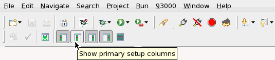
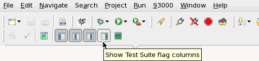
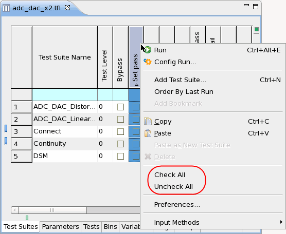

Editing a test suite in the Flow Data Editor
After inserting a test suite into the testflow, you can edit the settings of the test suite on the Test suites page of the Flow Data Editor or in the Properties view. This topic describes doing so with the Flow Data Editor.
Before you begin
Make sure that the test suite has been inserted into the testflow.
Procedures
Directly editing the test suite setting
On the Test suites page, you can edit the test suite name, the primary sets, and the test setup; and you can also set the test suite flags.
- To change the test suite name, double-click the Test Suite Name cell to make it editable. Then enter the new test suite name. You cannot change the name of the special test suite.
- To edit the primary sets:
- Open the Test suites page of the Flow Data Editor.
- On the shortcut bar of the SmarTest Work Center, click the
 button to display the primary settings on the Test suites page.Note If clicking the button does not take effect, check whether you have set the Primary Settings columns to be invisible. See Test Suites preference page.
button to display the primary settings on the Test suites page.Note If clicking the button does not take effect, check whether you have set the Primary Settings columns to be invisible. See Test Suites preference page.
- Select the desired timing setup.
Double-click a timing setup cell (Eqn or Spec/Waveform Set or Set cells) and the cell becomes editable, displaying with an Ellipsis button (...).
You can directly enter the number of the timing setup you desire in this cell, or click the Ellipsis button to open the Select Timing window. In this window, select a timing setup from the Specification list and the Timing set list. Then click OK. The appropriate timing setup file is loaded automatically.
- Select the level setup, analog set, and vector label in the same way as the timing setup.
- To edit the test setup, on the shortcut bar of the SmarTest Work Center, click the
 button to display the test setup.Note If clicking the button does not take effect, check whether you have set the Test Setup columns to be invisible. See Test Suites preference page.
button to display the test setup.Note If clicking the button does not take effect, check whether you have set the Test Setup columns to be invisible. See Test Suites preference page.You can modify the test method parameters in the Properties view and the limit values in the Tests page.
- To check the test suite flags, on the shortcut bar of the SmarTest Work Center, click the
 button to display the test suite flags on the Test suites page.Note If clicking the button does not take effect, check whether you have set the test suite flag columns to be invisible. See Test Suites preference page.
button to display the test suite flags on the Test suites page.Note If clicking the button does not take effect, check whether you have set the test suite flag columns to be invisible. See Test Suites preference page.
Now you can set the flags for the test suites. To check or uncheck a flag for all test suites, right-click the test suite flag name (the whole column for this flag is selected) and choose Check All or Uncheck All.

Note Setting the test suite flags FFV enable, FRG enable, FFC scan info enable and log first requires the test suite flag FFC enable to be activated. Setting the test suite flag H/L/I/U (multiple execution) requires the test suite flag FRG enable to be enabled. Otherwise, an error message appears at the bottom of the SmarTest Work Center.
Editing the test suite by copying and pasting
By copying and pasting, you can edit a test suite based on another test suite.
You cannot copy and paste special test suites.
- On the Test suites page, Right-click the line number of the test suite (for example, the continuity test suite ) and select Copy.
- Right-click the line number of another test suite and select Paste.
- The test suite is replaced by the copied test suite. Its name is changed to the name of the copied test suite plus the suffix "_1". (In this example, continuity_1.)
- You can edit the test suite name and other settings on the Test suites page.
Results
The settings of the test suite have been modified.
Functional changes
- Introduced before SmarTest 6.3.2
- SmarTest 6.5.2: To check/uncheck a flag for all test suites, right-click the test suite flag name and select Check All or Uncheck All.